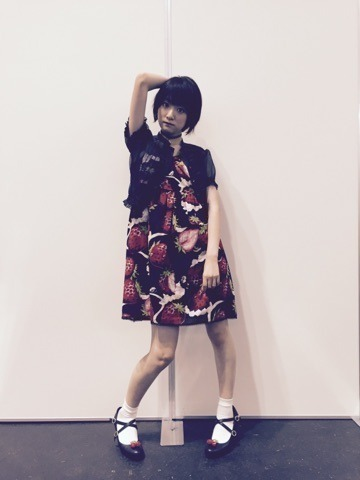
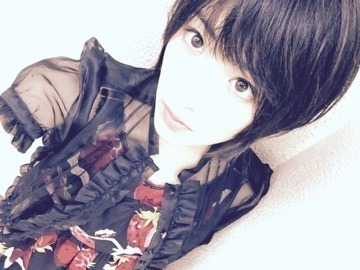
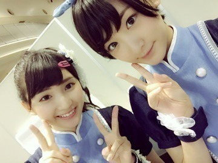

| 2015/07 29 Wed | 今夜はFNSうたの夏まつりだよんヽ(・∀ ・)ノ |
今日も暑いな〜(´；ω；｀)
ちょっと外歩いただけで、汗が。。
皆さんは体調大丈夫ですか〜ヽ(・∀・)ノ⁈
先週の土日に京都にて全国握手会と、個別握手会がありましたヽ(・∀・)ノ
来てくださった皆さんありがとうございましたm(__)m
全国握手会の日は、
セブンイレブンLIVEもあり、盛りだくさんな1日だったなぁ

セブンイレブンLIVE限定のスペシャルな内容になっているので、これから名古屋と東京とまだあるので是非皆さん来てくださいねヽ(・∀・)ノ
全国握手会はらんぜとペアだったよ〜！
礼儀正しい素敵な子です〜♨︎
癒されながら皆さんとのお話を楽しみました！
翌日の個別握手会はMILKで揃えました


苺柄のワンピースだから、甘さとちょっとロックに髪をセットしてみました

皆さんに似合うって言ってもらえて着た甲斐がありました☆

うぇーい(・∀・)
太陽ノックも発売になり
みんなで頑張ったヒット祈願が通じて前作よりも沢山の方に聴いてくださっています！！
この夏のお供にこれからもよろしくお願いしますね☆
今回のペアPVの相手さゆにゃんと

面白い作品になっていると思いますのでこちらもチェック

そう、
さゆにゃんと言えば帝一の國の白鳥美美子
という事で、
生駒握手会終わりに大阪公演を観に行きましたヽ(・∀・)ノ
同じく白鳥美美子役のひなちまとヽ(・∀・)ノ
生駒舞台を観るのが昔から好きで、メンバーが役者として舞台に出ている姿を観るのも大好きだし、
原作も大好きだし本当に幸せな時間でしたヽ(・∀・)ノ

舞台になると原作の漫画のよさがどうなるんだろうといろんな作品を観る時に気になるけど、
舞台になったとたん、
作品の中から帝一達が出てきた様で会えた〜！！って嬉しくなる！！
立ち姿や息づかいまでもがキャラクターそのものだし、時々見せる役者さんの素の良さがさらに観ている私達を楽しませて下さる！！
元気や生きていくパワーをもらいました！！
ありがたき時間でした

こんなに素晴らしい舞台に出ているのが2人でほんとに良かったし、
乃木坂46のメンバーが舞台で輝いているのを毎回観ると元気になるし、誇りに思う！！
と、
いちファンの感想でしたっ！！
さぁ、
頑張るぞっ！！
へばなっ☆彡
コメント(512)
2015/07/29 18:42